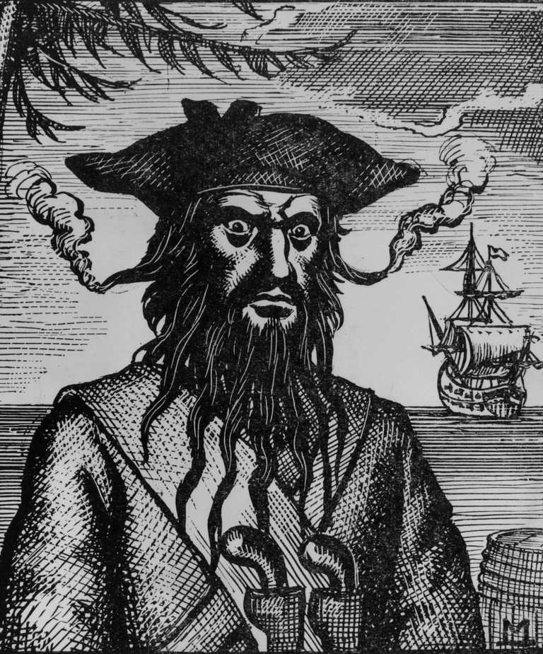
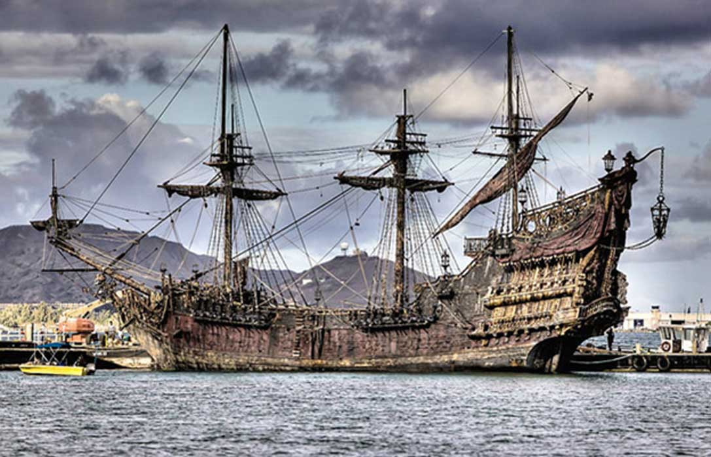
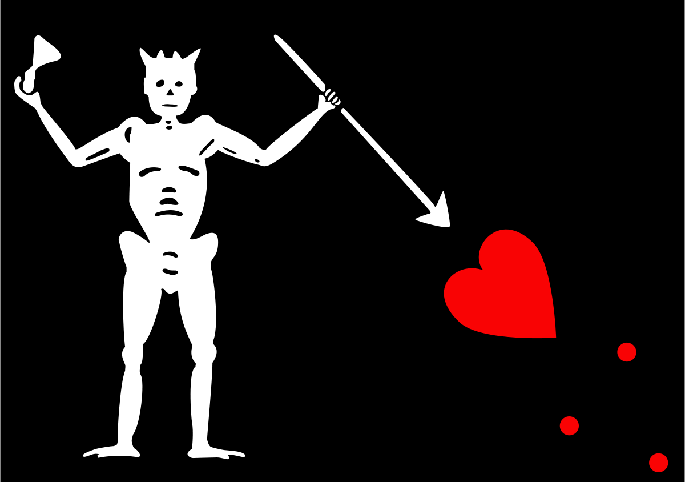

Blackbeard

Blackbeard was a famous pirate who terrorized Atlantic shipping from 1717 to 1718 before he was killed in battle in November 1718.
He often fought wearing a big feathered tricorn hat and brandished several swords, knives and pistols.
Blackbeard was famous for putting lit fuses into his hair and beard, which gave off smoke and made him look like a demon in battle.

Blackbeard's Pirate Ship, "Queen Anne's Revenge" - a former french slave ship armed with 40 cannons and many crew members

Blackbeard's pirate flag